%matplotlib inline
import matplotlib.pyplot as plt
import seaborn as sns
import numpy as np
import pandas as pd
sns.set() # seaborn's method to set its chart styleSeaborn을 이용한 시각화
Matplotlib는 수십 년 동안 파이썬(Python)의 과학적 시각화의 핵심 역할을 해왔지만 열성적인 사용자조차도 부족한 점이 많다는 점을 인정할 것입니다. Matplotlib에 대해 자주 제기되는 몇 가지 불만 사항이 있습니다.
- 현재는 구식이 된 일반적인 초기 불만 사항: 버전 2.0 이전에는 Matplotlib의 색상 및 스타일 기본값이 때때로 좋지 않고 구식으로 보였습니다.
- Matplotlib의 API는 상대적으로 낮은 수준입니다. 정교한 통계 시각화가 가능하지만 많은 상용구 코드가 필요한 경우가 많습니다.
- Matplotlib는 Pandas보다 10년 이상 앞서기 때문에 Pandas
DataFrame객체와 함께 사용하도록 설계되지 않았습니다. ‘DataFrame’의 데이터를 시각화하려면 각 ’시리즈’를 추출하고 종종 올바른 형식으로 연결해야 합니다. 플롯에서 ’DataFrame’ 레이블을 지능적으로 사용할 수 있는 플로팅 라이브러리가 있으면 더 좋을 것입니다.
이러한 문제에 대한 해답이 Seaborn에 있습니다. Seaborn은 플롯 스타일 및 색상 기본값에 대한 올바른 선택을 제공하고 일반적인 통계 플롯 유형에 대한 간단한 고급 기능을 정의하며 Pandas에서 제공하는 기능과 통합하는 Matplotlib 위에 API를 제공합니다.
공평하게 말하면, Matplotlib 팀은 변화하는 환경에 적응했습니다. Matplotlib 사용자 정의: 구성 및 스타일 시트에서 논의된 ‘plt.style’ 도구를 추가했으며 Matplotlib는 Pandas 데이터를 더 원활하게 처리하기 시작했습니다. 그러나 방금 논의한 모든 이유 때문에 Seaborn은 여전히 유용한 추가 기능으로 남아 있습니다.
관례적으로 Seaborn은 sns로 가져오는 경우가 많습니다.
Seaborn 플롯 탐색
Seaborn의 주요 아이디어는 통계 데이터 탐색 및 일부 통계 모델 피팅에 유용한 다양한 플롯 유형을 생성하는 고급 명령을 제공한다는 것입니다.
Seaborn에서 사용할 수 있는 몇 가지 데이터 세트와 플롯 유형을 살펴보겠습니다. 다음 모든 작업은 원시 Matplotlib 명령을 사용하여 수행할 수 있지만(실제로 Seaborn이 내부적으로 수행하는 작업임) Seaborn API가 훨씬 더 편리합니다.
히스토그램, KDE 및 밀도
통계 데이터 시각화에서 원하는 것은 히스토그램과 변수의 결합 분포를 그리는 것뿐입니다. 우리는 이것이 Matplotlib에서 비교적 간단하다는 것을 확인했습니다(다음 그림 참조).
data = np.random.multivariate_normal([0, 0], [[5, 2], [2, 2]], size=2000)
data = pd.DataFrame(data, columns=['x', 'y'])
for col in 'xy':
plt.hist(data[col], density=True, alpha=0.5)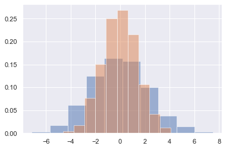
히스토그램을 시각적 출력으로 제공하는 대신 Seaborn이 sns.kdeplot(다음 그림 참조)으로 수행하는 커널 밀도 추정(Density and Contour Plots에 도입됨)을 사용하여 분포를 원활하게 추정합니다.
sns.kdeplot(data=data, shade=True);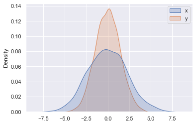
x 및 y 열을 kdplot에 전달하면 대신 결합 밀도의 2차원 시각화를 얻습니다(다음 그림 참조).
sns.kdeplot(data=data, x='x', y='y');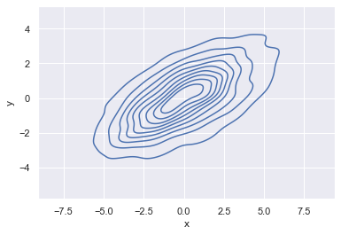
sns.jointplot을 사용하여 결합 분포와 한계 분포를 함께 볼 수 있으며, 이에 대해서는 이 장의 뒷부분에서 더 자세히 살펴보겠습니다.
쌍 도표
결합 도표를 더 큰 차원의 데이터 세트로 일반화하면 결국 쌍 도표가 됩니다. 이는 모든 값 쌍을 서로에 대해 플롯하려는 경우 다차원 데이터 간의 상관 관계를 탐색하는 데 매우 유용합니다.
세 가지 붓꽃 종의 꽃잎과 꽃받침 측정값을 나열하는 잘 알려진 붓꽃 데이터 세트를 사용하여 이를 시연해 보겠습니다.
iris = sns.load_dataset("iris")
iris.head()| sepal_length | sepal_width | petal_length | petal_width | species | |
|---|---|---|---|---|---|
| 0 | 5.1 | 3.5 | 1.4 | 0.2 | setosa |
| 1 | 4.9 | 3.0 | 1.4 | 0.2 | setosa |
| 2 | 4.7 | 3.2 | 1.3 | 0.2 | setosa |
| 3 | 4.6 | 3.1 | 1.5 | 0.2 | setosa |
| 4 | 5.0 | 3.6 | 1.4 | 0.2 | setosa |
샘플 간의 다차원 관계를 시각화하는 것은 sns.pairplot을 호출하는 것만큼 쉽습니다(다음 그림 참조).
sns.pairplot(iris, hue='species', height=2.5);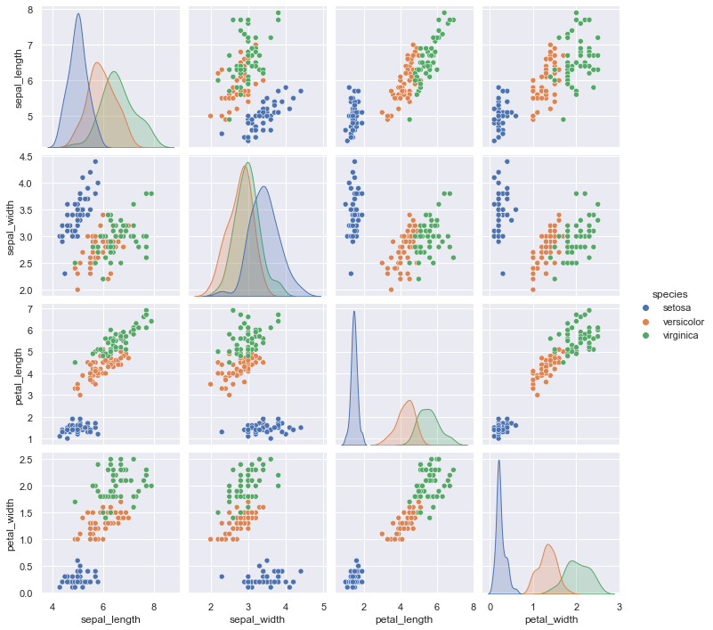
패싯 히스토그램
때때로 데이터를 보는 가장 좋은 방법은 다음 그림과 같이 하위 집합의 히스토그램을 이용하는 것입니다. Seaborn의 ’FacetGrid’를 사용하면 이 작업이 간단해집니다. 다양한 지표 데이터를 기반으로 레스토랑 직원이 팁으로 받는 금액을 보여주는 몇 가지 데이터를 살펴보겠습니다.1
tips = sns.load_dataset('tips')
tips.head()| total_bill | tip | sex | smoker | day | time | size | |
|---|---|---|---|---|---|---|---|
| 0 | 16.99 | 1.01 | Female | No | Sun | Dinner | 2 |
| 1 | 10.34 | 1.66 | Male | No | Sun | Dinner | 3 |
| 2 | 21.01 | 3.50 | Male | No | Sun | Dinner | 3 |
| 3 | 23.68 | 3.31 | Male | No | Sun | Dinner | 2 |
| 4 | 24.59 | 3.61 | Female | No | Sun | Dinner | 4 |
tips['tip_pct'] = 100 * tips['tip'] / tips['total_bill']
grid = sns.FacetGrid(tips, row="sex", col="time", margin_titles=True)
grid.map(plt.hist, "tip_pct", bins=np.linspace(0, 40, 15));
패싯 차트는 데이터 세트에 대한 몇 가지 빠른 통찰력을 제공합니다. 예를 들어 다른 범주보다 저녁 식사 시간 동안 남성 서버에 대한 데이터가 훨씬 더 많이 포함되어 있으며 일반적인 팁 금액은 대략 10%에서 20% 사이인 것으로 나타납니다. 양쪽 끝에 약간의 이상치가 있습니다.
범주형 도표
범주형 도표는 이러한 종류의 시각화에도 유용합니다. 이를 통해 다음 그림과 같이 다른 매개변수에 의해 정의된 저장소 내의 매개변수 분포를 살펴볼 수 있습니다.
with sns.axes_style(style='ticks'):
g = sns.catplot(x="day", y="total_bill", hue="sex", data=tips, kind="box")
g.set_axis_labels("Day", "Total Bill");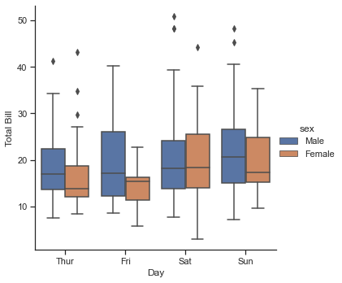
공동 배포
앞서 본 쌍 도표와 유사하게 sns.jointplot을 사용하여 관련 한계 분포와 함께 다양한 데이터 세트 간의 결합 분포를 표시합니다(다음 그림 참조).
with sns.axes_style('white'):
sns.jointplot(x="total_bill", y="tip", data=tips, kind='hex')
다음 그림과 같이 결합 플롯은 일부 자동 커널 밀도 추정 및 회귀도 수행합니다.
sns.jointplot(x="total_bill", y="tip", data=tips, kind='reg');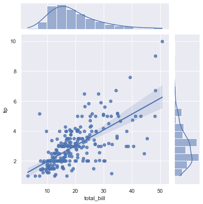
막대 그래프
시계열은 sns.factorplot을 사용하여 그릴 수 있습니다. 다음 예에서는 집계 및 그룹화에서 처음 본 Planets 데이터 세트를 사용합니다. 결과는 다음 그림을 참조하세요.
planets = sns.load_dataset('planets')
planets.head()| method | number | orbital_period | mass | distance | year | |
|---|---|---|---|---|---|---|
| 0 | Radial Velocity | 1 | 269.300 | 7.10 | 77.40 | 2006 |
| 1 | Radial Velocity | 1 | 874.774 | 2.21 | 56.95 | 2008 |
| 2 | Radial Velocity | 1 | 763.000 | 2.60 | 19.84 | 2011 |
| 3 | Radial Velocity | 1 | 326.030 | 19.40 | 110.62 | 2007 |
| 4 | Radial Velocity | 1 | 516.220 | 10.50 | 119.47 | 2009 |
with sns.axes_style('white'):
g = sns.catplot(x="year", data=planets, aspect=2,
kind="count", color='steelblue')
g.set_xticklabels(step=5)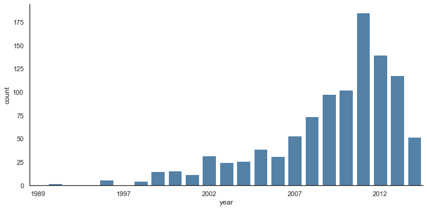
각 행성을 발견하는 방법을 살펴보면 더 많은 정보를 얻을 수 있습니다(다음 그림 참조).
with sns.axes_style('white'):
g = sns.catplot(x="year", data=planets, aspect=4.0, kind='count',
hue='method', order=range(2001, 2015))
g.set_ylabels('Number of Planets Discovered')
Seaborn을 사용한 플로팅에 대한 자세한 내용은 Seaborn 문서, 특히 예제 갤러리를 참조하세요.
예: 마라톤 종료 시간 탐색
여기서는 Seaborn을 사용하여 마라톤 완주 결과를 시각화하고 이해하는 방법을 살펴보겠습니다. 웹 소스에서 데이터를 긁어 모아 집계하고 식별 정보를 모두 제거한 다음 다운로드할 수 있는 GitHub에 올렸습니다. (웹 스크래핑에 파이썬(Python)을 사용하는 데 관심이 있다면 역시 O’Reilly의 Ryan Mitchell이 쓴 Web Scraping with 파이썬(Python)을 추천합니다.) 데이터를 다운로드하고 Pandas에 로드하는 것부터 시작하겠습니다.2
# url = ('https://raw.githubusercontent.com/jakevdp/'
# 'marathon-data/master/marathon-data.csv')
# !cd data && curl -O {url}data = pd.read_csv('data/marathon-data.csv')
data.head()| age | gender | split | final | |
|---|---|---|---|---|
| 0 | 33 | M | 01:05:38 | 02:08:51 |
| 1 | 32 | M | 01:06:26 | 02:09:28 |
| 2 | 31 | M | 01:06:49 | 02:10:42 |
| 3 | 38 | M | 01:06:16 | 02:13:45 |
| 4 | 31 | M | 01:06:32 | 02:13:59 |
Pandas는 시간 열을 파이썬(Python) 문자열(object 유형)로 로드했습니다. DataFrame의 dtypes 속성을 보면 이를 확인합니다.
data.dtypesage int64
gender object
split object
final object
dtype: object시대에 맞는 변환기를 제공하여 이 문제를 해결해 보겠습니다.
import datetime
def convert_time(s):
h, m, s = map(int, s.split(':'))
return datetime.timedelta(hours=h, minutes=m, seconds=s)
data = pd.read_csv('data/marathon-data.csv',
converters={'split':convert_time, 'final':convert_time})
data.head()| age | gender | split | final | |
|---|---|---|---|---|
| 0 | 33 | M | 0 days 01:05:38 | 0 days 02:08:51 |
| 1 | 32 | M | 0 days 01:06:26 | 0 days 02:09:28 |
| 2 | 31 | M | 0 days 01:06:49 | 0 days 02:10:42 |
| 3 | 38 | M | 0 days 01:06:16 | 0 days 02:13:45 |
| 4 | 31 | M | 0 days 01:06:32 | 0 days 02:13:59 |
data.dtypesage int64
gender object
split timedelta64[ns]
final timedelta64[ns]
dtype: object그러면 시간 데이터를 더 쉽게 조작합니다. Seaborn 플로팅 유틸리티의 목적을 위해 다음으로 시간을 초 단위로 제공하는 열을 추가해 보겠습니다.
data['split_sec'] = data['split'].view(int) / 1E9
data['final_sec'] = data['final'].view(int) / 1E9
data.head()| age | gender | split | final | split_sec | final_sec | |
|---|---|---|---|---|---|---|
| 0 | 33 | M | 0 days 01:05:38 | 0 days 02:08:51 | 3938.0 | 7731.0 |
| 1 | 32 | M | 0 days 01:06:26 | 0 days 02:09:28 | 3986.0 | 7768.0 |
| 2 | 31 | M | 0 days 01:06:49 | 0 days 02:10:42 | 4009.0 | 7842.0 |
| 3 | 38 | M | 0 days 01:06:16 | 0 days 02:13:45 | 3976.0 | 8025.0 |
| 4 | 31 | M | 0 days 01:06:32 | 0 days 02:13:59 | 3992.0 | 8039.0 |
데이터가 어떻게 보이는지에 대한 아이디어를 얻으려면 데이터 위에 결합 플롯을 그릴 수 있습니다. 다음 그림은 결과를 보여줍니다.
with sns.axes_style('white'):
g = sns.jointplot(x='split_sec', y='final_sec', data=data, kind='hex')
g.ax_joint.plot(np.linspace(4000, 16000),
np.linspace(8000, 32000), ':k')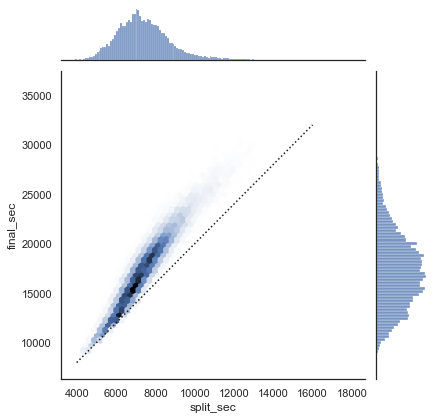
점선은 완벽하게 안정된 속도로 마라톤을 달릴 경우 그 사람의 시간이 어디에 있을 것인지를 보여줍니다. 분포가 이보다 높다는 사실은 (예상할 수 있듯이) 대부분의 사람들이 마라톤을 진행하는 동안 속도가 느려진다는 것을 나타냅니다. 경쟁적으로 달리는 경우, 반대 방향으로 달리는 사람들(경주 후반부에 더 빠르게 달리는 사람들)을 경주에서 “부정 분할”했다고 합니다.
데이터에 각 주자가 경주를 음수 분할 또는 양수 분할하는 정도를 측정하는 분할 비율이라는 또 다른 열을 만들어 보겠습니다.
data['split_frac'] = 1 - 2 * data['split_sec'] / data['final_sec']
data.head()| age | gender | split | final | split_sec | final_sec | split_frac | |
|---|---|---|---|---|---|---|---|
| 0 | 33 | M | 0 days 01:05:38 | 0 days 02:08:51 | 3938.0 | 7731.0 | -0.018756 |
| 1 | 32 | M | 0 days 01:06:26 | 0 days 02:09:28 | 3986.0 | 7768.0 | -0.026262 |
| 2 | 31 | M | 0 days 01:06:49 | 0 days 02:10:42 | 4009.0 | 7842.0 | -0.022443 |
| 3 | 38 | M | 0 days 01:06:16 | 0 days 02:13:45 | 3976.0 | 8025.0 | 0.009097 |
| 4 | 31 | M | 0 days 01:06:32 | 0 days 02:13:59 | 3992.0 | 8039.0 | 0.006842 |
이 분할 차이가 0보다 작은 경우, 그 사람은 해당 비율로 인종을 음수로 분할합니다. 이 분할 부분의 분포도를 그려보겠습니다(다음 그림 참조).
sns.displot(data['split_frac'], kde=False)
plt.axvline(0, color="k", linestyle="--");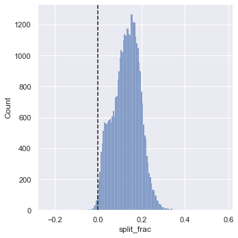
sum(data.split_frac < 0)251약 40,000명의 참가자 중 마라톤에서 마이너스 분할을 한 사람은 250명에 불과했습니다.
이 분할분율과 다른 변수 사이에 상관관계가 있는지 살펴보겠습니다. 우리는 이러한 모든 상관 관계의 플롯을 그리는 PairGrid를 사용하여 이 작업을 수행할 것입니다(다음 그림 참조).
g = sns.PairGrid(data, vars=['age', 'split_sec', 'final_sec', 'split_frac'],
hue='gender', palette='RdBu_r')
g.map(plt.scatter, alpha=0.8)
g.add_legend();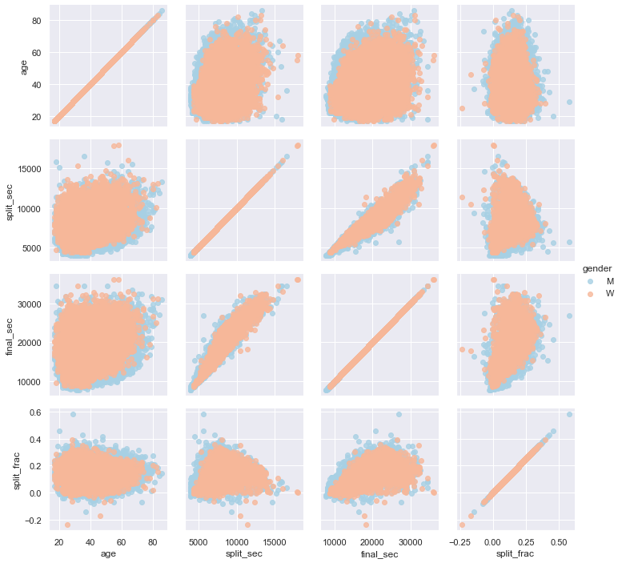
스플릿 비율은 특별히 나이와 관련이 없지만 최종 기록과 관련이 있는 것으로 보입니다. 더 빠른 주자는 마라톤 시간에 균등한 스플릿에 더 가까운 경향이 있습니다. 다음 그림과 같이 성별로 구분된 분할 분수의 히스토그램을 확대해 보겠습니다.
sns.kdeplot(data.split_frac[data.gender=='M'], label='men', shade=True)
sns.kdeplot(data.split_frac[data.gender=='W'], label='women', shade=True)
plt.xlabel('split_frac');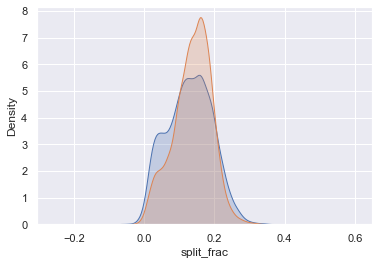
여기서 흥미로운 점은 균등한 분할에 가까워지고 있는 여성보다 남성이 더 많다는 것입니다! 남성과 여성 사이에는 거의 이봉 분포처럼 보입니다. 연령에 따른 분포를 살펴봄으로써 무슨 일이 일어나고 있는지 알아낼 수 있는지 살펴보겠습니다.
분포를 비교하는 좋은 방법은 다음 그림에 표시된 바이올린 플롯을 사용하는 것입니다.
sns.violinplot(x="gender", y="split_frac", data=data,
palette=["lightblue", "lightpink"]);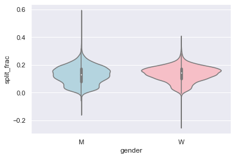
조금 더 자세히 살펴보고 이러한 바이올린 플롯을 연령에 따른 함수로 비교해 보겠습니다(다음 그림 참조). 각 사람의 연령 범위를 10년 단위로 지정하는 배열에 새 열을 만드는 것부터 시작하겠습니다.
data['age_dec'] = data.age.map(lambda age: 10 * (age // 10))
data.head()| age | gender | split | final | split_sec | final_sec | split_frac | age_dec | |
|---|---|---|---|---|---|---|---|---|
| 0 | 33 | M | 0 days 01:05:38 | 0 days 02:08:51 | 3938.0 | 7731.0 | -0.018756 | 30 |
| 1 | 32 | M | 0 days 01:06:26 | 0 days 02:09:28 | 3986.0 | 7768.0 | -0.026262 | 30 |
| 2 | 31 | M | 0 days 01:06:49 | 0 days 02:10:42 | 4009.0 | 7842.0 | -0.022443 | 30 |
| 3 | 38 | M | 0 days 01:06:16 | 0 days 02:13:45 | 3976.0 | 8025.0 | 0.009097 | 30 |
| 4 | 31 | M | 0 days 01:06:32 | 0 days 02:13:59 | 3992.0 | 8039.0 | 0.006842 | 30 |
men = (data.gender == 'M')
women = (data.gender == 'W')
with sns.axes_style(style=None):
sns.violinplot(x="age_dec", y="split_frac", hue="gender", data=data,
split=True, inner="quartile",
palette=["lightblue", "lightpink"]);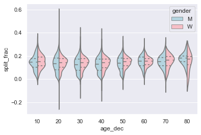
남성과 여성의 분포가 어디에서 다른지 확인합니다. 20대~50대 남성의 분할 분포는 같은 연령(또는 모든 연령)의 여성과 비교할 때 낮은 분할에 대한 뚜렷한 과밀도를 보여줍니다.
또한 놀랍게도 80세 여성은 스플릿 타임 측면에서 모든 사람보다 뛰어난 성과를 보이는 것으로 보입니다. 하지만 해당 범위에 소수의 주자가 있기 때문에 이는 소수 효과일 가능성이 높습니다.
(data.age > 80).sum()7부정적인 분할을 가진 남자들로 돌아가서, 이 주자들은 누구입니까? 이 분할 비율이 빨리 마무리하는 것과 관련이 있습니까? 우리는 이것을 아주 쉽게 플롯합니다. 선형 회귀 모델을 데이터에 자동으로 맞추는 ’regplot’을 사용하겠습니다(다음 그림 참조).
g = sns.lmplot(x='final_sec', y='split_frac', col='gender', data=data,
markers=".", scatter_kws=dict(color='c'))
g.map(plt.axhline, y=0.0, color="k", ls=":");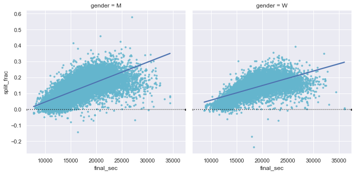
분명히 남성과 여성 모두에서 빠른 스플릿을 가진 사람들은 약 15,000초, 즉 약 4시간 이내에 완주하는 더 빠른 주자들인 경향이 있습니다. 그보다 느린 사람들은 빠른 두 번째 분할을 가질 가능성이 훨씬 적습니다.